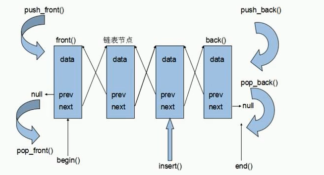

list
将数据进行链式存储
链表：是一种物理存储单元上非连续的存储结构，数据元素的逻辑顺序是通过链表中的指针链接实现的
链表的组成：链表由一系列结点组成
结点的组成：一个是存储数据的数据域，另一个是存储下一个结点地址的指针域
STL中的链表是一个双向循环链表

由于链表的存储方式并不是连续的内存空间，因此链表list中的迭代器只支持前移和后移，属于双向迭代器
list优点：
list插入和删除都不会造成原有list迭代器的失效，这在vector中是不成立的
list构造函数
list<T> lst;
list(beg, end); //构造函数将[beg, end]区间中的元素拷贝给本身
list(n, elem); //
list(const list &lst); //拷贝构造函数
list赋值和交换
list& operator=(const list &lst);
assign(beg, end);
assign(n, elem);
swap(lst); //将lst与本身的元素互换
list大小操作
size();
empty();
resize(num);
resieze(num, elem);
list插入和删除（与deque相似）
push_back(elem);
pop_back();
push_front(elem);
pop_front();
insert(pos,elem);
list<int>: : iterator it = L.begin();
L.insert(++it, 100);
insert(pos,n,elem);
insert(pos,beg,end);
erase(beg,end);
erase(pos);
remove(elem); //删除容器中所有与elem值匹配的元素
list<int>::iterator it = L.begin();
it++;
it--; //支持双向
it = it+1;（错）不支持随机访问
list反转和排序
reverse();
L.reverse();
sort(); //升序
降序
//指定排序规则
bool myCompare(int v1, int v2)
{
return v1>v2;
}
L.sort(myCompare);
bool comparePerson(Person &p1, Person &p2)
{
//按年龄升序
if(p1.m_Age == p2.m_Age)
{
//年龄相同，按身高降序
return p1.m_Height > p2.m_Height;
}
return p1.m_Age < p2.m_Age;
}
L.sort(comparePerson);
set(与栈、队列相似)
所有元素都会在插入时自动被排序
本质：set/multiset属于关联式容器，底层结构是用二叉树实现
set和multiset区别：
set构造
set<T> st;
set(const set &st); //拷贝构造函数
set赋值
set& operator=(const set &st);
set大小和交换
size();
empty();
swap();
set<int> s;
for( set<int>: : iterator it = s.begin() ; it != s.end() ; it++ )
set插入和删除
//只有insert这种方法插入
insert(elem);
clear();
erase(pos);
erase(beg,end);
erase(elem); //删除容器中值为elem的元素
set查找和统计
find(key); //查找key是否存在，若存在，返回该键的元素的迭代器；若不存在，返回set.end()
count(key); //统计key的元素的个数，要么是0，要么是1
set<int>::iterator pos = s1.find(30);
if(pos != s1.end)
{cout<<"找到数据！"}
else
{cout<<"没找到！"}
set和multiset区别
set插入数据的同时会返回插入结果，表示插入成功, insert返回pair类型
set<int> s;
pari< set<int>::iterator, bool > ret = s.insert(10); //一个迭代器，一个布尔类型
if(ret.second)
{cout<<"插入成功";}
else
{cout<<"插入失败";}
multiset<int> ms;
ms.insert(10);
ms.insert(10); //不返回bool类型
pair对组创建
pair<type, type> p(value1, value2);
pair<string, int> p("Tom", 20);
cout<<p.first<<p.second<<endl;
pair<type, type> p = make_pair(value1, value2);
pair<string, int>p1 = make_pair("Terry", 30);
set容器排序
改变排序规则
利用仿函数，可以改变排序规则
数据插入后不能更改
bool operator()(int v1, int v2);
class MyCompare
{
public:
bool operator()(int v1, int v2)
{
return v1>v2;
}
}；
set<int, MyCompare>s2;
s2.insert(10);
s2.insert(40);
s2.insert(20);
s2.insert(50);
s2.insert(30);
自定义数据类型指定排序规则
类：Person
class MyCompare
{
public:
bool operator()(const Person&p1, const Person&p2)
{
return p1.m_Age > p2.m_Age;
}
}；
set<Person, MyCompare> s;
s.insert(p1);
s.insert(p2);
s.insert(p3);
s.insert(p4);
s.insert(p5);